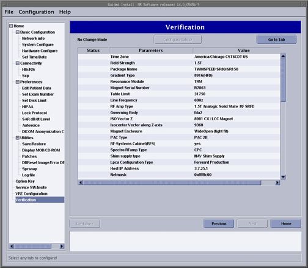
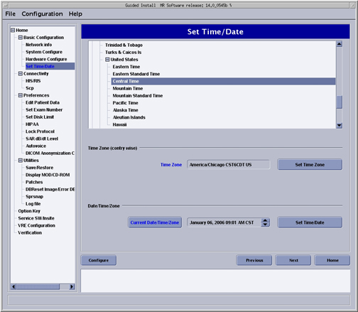
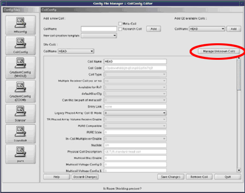

Operating Documentation
Direction 5440001-3, Rev# 6
Signa HDxt Service Methods
Module Version 1.0, Version Date 4/25/07
Operating Documentation |
| Required Persons | Preliminary Reqs | Procedure | Finalization |
|---|---|---|---|
| 1 | Not Applicable | Not Applicable | Not Applicable |
This document includes:
Reconfiguring the System Using the Install GUI
Setting the Host Time and Date
Releasing 14.x Coil Configuration Updates
If this is a new/upgrade Signa Installation or if the system just needs to be reconfigured between software loads, do the following to start the Configuration GUI:
From the MR Service Desktop select [Configuration].
Under Guided Install, select [FE mode]. Select [Click here to start this tool]. The Guided Install window appears.
At the password prompt, type operator and press<Enter>. The Install menu appears.
| NOTE: | Help documentation is built into the GUI. Push the [Help] button on the tab you need information for in the GUI. |
Push the [Next] button to move through tabs in order. Modify entries to match your system as required. When satisfied, push the [Configure] button at the bottom of the tab page or wait until all tabs have been modified and go to the [Verification] tab. Review changes, make corrections if necessary, then push the [Configure Tab(s)] button to update the system (see Illustration 1)
Illustration 1: Verification Menu-Configure Tabs

Before exiting the GUI, insert the SaveInfo MOD or new MOD into the drive. Go to the top left corner of the Install GUI and select [File] and then [Save] and then [Save GI Configuration to MOD]. This process does not create a SaveInfo disk. It just creates a copy of the information already entered in the GUI tabs for use in the next software install.
Exit the install GUI by selecting [File] then [Quit]. If any error conditions still exist, a warning appears indicating that no changes will be made before exiting.
| NOTE: | The GUI does not automatically reboot the system in configure mode. It is up to the user to reboot after making configuration changes. |
If changes were made to the system configuration, select [System Restart] and reboot the system for changes to take effect.
The Time/Date tab is the only tab in which the Configure button is not used to set options. There are separate buttons for configuring this tab (see Illustration 2). If you need to reconfigure the Host time and or date at any time, do the following:
Select the time zone your system is located in, then click the [Set Time Zone] button.
Select the date and local time, then click the [Set Time/Date] button.
Illustration 2: Set Time/Date Menu

If unknown coils are found do the following:
Click the [config] button on the Service Desktop.
Under Configuration, select [Config File Manager].
Select [Click here to start this tool.]
Select [coil config].
Select the [Manage Unknown Coils] button.
Use [Help] to fix unknown coils. See Illustration 3
Illustration 3: Config File Manager

No finalization steps.